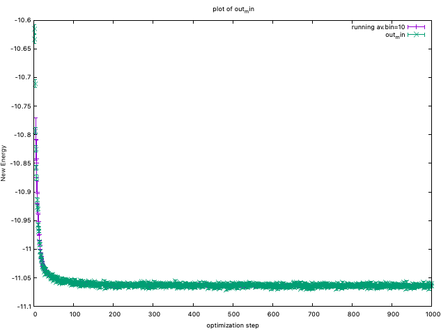
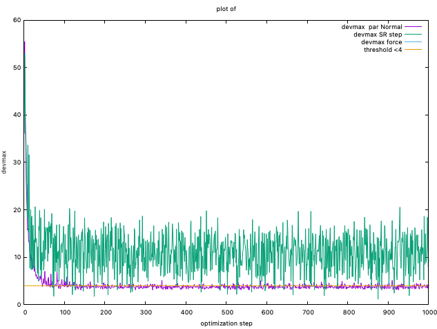

Wavefunction optimization
What the VMC optimization does?
From this document, you can learn how to optimize a wavefunction at the VMC level in practice. The most difficult operation in quantum Monte Carlo simulations is to optimize a many-body wavefunction at the VMC level. Here, we describe how to do it in practice. You can also refer to the optimization part (VII. Optimization of WFs) of the review article.
In Variational Monte Carlo, we evaluate the following integral using the Markov-chain monte Carlo method.
From the variational principle, the closer to the exact the WF is, the lower the energy becomes. There once we can evaluate the above integral with some variational parameters \(\vec{\alpha}\), we can seek exact solution by minimizing the parameters.
Optimization method
There are two major optimization methods are implemented in TurboRVB.
One is the so-called stochastic reconfiguration (SR) method (itestr4 = -9,-5),
and the other one is the so-called linear method (LR) with conjugate gradient (itestr4 = -4,-8). Notice that -9 and -4 do not optimize exponents of the determinant part, while -5 and -8 optimize them.
In general, the LR method works very efficiently and properly when the number of variational parmeters is not so large. For example, less than 1000? If you optimize more than 1000 variational parameters, we recommend the SR method.
important hyperparameters
The most important parameters in practice are
tpar: Acceleration parameter (i.e., learning rate.)
parr: Regularization (c.f., LASSO)
tpar
For example, in the stochastic reconfiguration (SR) method, the variational parameters are updated as:
where \(\Delta\) is tpar, \({\mathbf{f}}\) is the general force vector, and \({\boldsymbol{\mathcal{S'}}}\) is
the variance-covariance matrix which is stochastically evaluated by means of \(M\) configuration samples \({\mathbf{x}} = \left\{ {{{\mathbf{x}}_1},{{\mathbf{x}}_2}, \ldots {{\mathbf{x}}_M}} \right\}\):
where \({O_k}\left( {{{\mathbf{x}}_i}} \right) = \frac{{\partial \ln \Psi \left( {{{\mathbf{x}}_i}} \right)}}{{\partial {\alpha _k}}}\) and \({{\bar O}_k} = \frac{1}{M}\sum\limits_{i = 1}^M {{O_k}\left( {{{\mathbf{x}}_i}} \right)}\).
parr
The straightforward implementation of the SR method is not stable mainly because the statistical noise sometimes makes the matrix \({\boldsymbol{\mathcal{S}}}\) ill-conditioned, which deteriorates the efficiency of the optimization method. Therefore, in practice, the diagonal elements of the preconditioning matrix \({\mathcal{S}}\) are shifted by a small positive parameter (\(\varepsilon\)) as:
where \(\varepsilon\) = parr in TurboRVB.
This modification improves the efficiency of the optimization by several orders of magnitude.
Order of optimizing variational parameters
The so-called Andrea-Zen's method empirically works very well for the LR method. Indeed, to avoid local minima in the Jastrow, the developers have experienced that it is important at the beginning to optimize only the one-body Jastrow part. According to this procedure, one should optimize variational parameters in the following order.
Put a reasonable two-body Jastrow parameter (typically ~ 1.0 for -6, -15, -22),
Optimize homogenous and inhomogeneous one-body Jastrows (two-body and three-body are fixed),
Optimize three-body Jastrows (two-body fixed), and
Optimize two-body Jastrow(s) and the determinant part,
wherein
One should set
iesfree=1andiesd=1, and puttwobodyoff=.true.andiesdtwobodyoff=.true.in the¶meterssection,One should remove
iesdtwobodyoff=.true.option, andOne should remove
twobodyoff=.true.andiesdtwobodyoff=.true., and setiessw=1(determinant optimization).
Criterium of optimization convergence
In practice, during an optimization, the code monitors the variational energy (\(E\left( \boldsymbol{\alpha} \right)\)) and the maximum value of the signal to noise ratio among all the force components, which is denoted as devmax in the code:
where \({\sigma _{{f_k}}}\) represents the estimated error bar of a general force \({f_k} =- \frac{{\partial E\left( \alpha \right)}}{{\partial {\alpha _k}}} = - \frac{\partial }{{\partial {\alpha _k}}}\frac{{\braket{{\Psi _\alpha }|\hat {\mathcal{H}}|{\Psi _\alpha }}}}{{\braket{{\Psi _\alpha }|{\Psi _\alpha }}}}\).
You can plot energies by plot_Energy.sh
{kind=link}

You can also plot devmaxs by plot_devmax.sh
{kind=link}

The devepoler has experience that, at least, devmax should be smaller
than 4.0 after optimization. However, the developers also have experienced
that this simple criteria is not sufficient to obtain a converged result.
Instead, the developers recently checked if the two-body Jastrow and the inhomogeneous one-body Jastrows are also converged.
This seems an empirically good criterium of optimization convergence,
though it is still under debate.
Hyperparameters in the optimization methods
There are several hyperparameters in the optimization method. Although a proper choice for some hyperparameters are still under debate, we show a tentative guidline.
nweight
nweight is the number of Monte Carlo sampling per optimization step.
For the LR method, the number of samplings in VMC should be much larger than the number of variational parameters, i.e., nweight \(\times\) Number of (mpi) tasks \(>\) 5 \(\sim\) 10 \(\times\) \(p\), where \(p\) is the number of variational parameters.
For the SR method, nweight \(\times\) Number of (mpi) tasks can be set even or smaller than \(p\) as long as parr is set sufficiently large.
tpar
tpar is an acceleration hyperparameter in optimization, corresponding to \(Delta\) in Eq.131 and that in Eq.139 of the review paper for the LR and SR methods, respectively. In the machine learning community, tpar is also called learning rate.
For the LR method, tpar = 0.35 usually works well.
For the SR method, one should set tpar much smaller, typically 1.0d-4.
adjust_tpar is a useful option recently introduced by Andrea Tirelli, to find an optimal tpar. Indeed, if adjust_tpar is set true, tpar gradually increases as optimization iteration goes on after 100 equilibrium iterations.
beta_learning is also a useful option to realize a stable optimization. beta_learning = 0.90 is a good starting point?
parr
parr is a regularization parameter which is added to the diagonal elements of a preconditioning matrix S, in Eq.128 of the review paper.
In the LR method (corresponding to kl=6 or kl=7 in TurboRVB), parr is added to the diagonal elements of the SR matrix to regularize small or near-zero eigenvalues, preventing numerical instabilities when the matrix becomes ill-conditioned.
The regularization is applied as:
where \(\varepsilon\) = parr and \(S'\) is the regularized matrix.
When parr < 0, the Umrigar regularization method is activated, which provides more robust but computationally expensive regularization.
For the LR method, parr = 0.01 - 0.1 is typically recommended. The value of parr can be automatically adjusted during optimization when change_parr=.true., decreasing when convergence is good (devmaxc ≤ parcutpar + 1.5 for 3+ iterations) and increasing when convergence is poor (devmaxc > parcutpar + 3 for 15+ iterations).
Default value: 0.0d0 (no regularization). Larger parr values provide more stability but slower convergence.
ncg
ncg is an integer parameter that specifies the number of collective parameters (conjugate gradient directions) to be stored and used for Hessian computation to accelerate convergence. It represents the number of previous SR (Stochastic Reconfiguration) directions that are kept in memory to build an approximate Hessian matrix.
When ncg = 1 (default), only the current SR direction is used, which corresponds to the standard Stochastic Reconfiguration method. This is the most stable and commonly used setting.
When ncg > 1, previous ncg SR directions are stored and used to compute an approximate Hessian matrix, which accelerates convergence toward the minimum. Note: This only works with Linear Method (itestrr = -4), not with standard SR method. If ncg > 1 and itestrr ≠ -4, ncg is automatically set to 1.
The total number of parameters considered in optimization is:
where npbra is the maximum number of normal parameters.
Default value: 1 (simple SR method). For accelerated convergence with Linear Method, ncg = 4 or larger can be used, but this requires more memory (stores ncg × np values) and may be less stable than ncg = 1.
npbra and parcutpar
npbra is an integer parameter that specifies the maximum number of normal (non-collective) parameters to be included in the optimization. It is used in conjunction with ncg (number of collective parameters) to determine the total number of parameters considered: nbinmax = ncg + npbra.
In the optimization process, parameters are selected based on their importance (measured by \(|f_k/\sigma_{f_k}|\)). The npbra most important normal parameters are included, in addition to the ncg collective parameters.
parcutpar is a cutoff threshold parameter used to select which normal parameters are included in the optimization. Parameters with a normalized force-to-error ratio \(|f_k/\sigma_{f_k}|\) greater than parcutpar are considered for optimization. It is also used in convergence criteria for automatic adjustment of parr.
The parameter selection criterion is:
where \(f_k\) is the force (gradient) for parameter \(k\) and \(\sigma_{f_k}\) is the error (standard deviation).
Together, parcutpar determines which parameters are selected (based on importance), while npbra determines how many normal parameters can be selected (maximum count). Only parameters with \(|f_k/\sigma_{f_k}| > {\rm parcutpar}\) are considered, up to a maximum of npbra normal parameters.
parcutpar is also used in convergence detection for automatic parr adjustment:
Good convergence:
devmaxc ≤ parcutpar + 1.5(triggers decrease ofparr)Poor convergence:
devmaxc > parcutpar + 3(triggers increase ofparr)
Default values: npbra = 0 (only collective parameters are used), parcutpar = 0.0d0 (no cutoff). Typical values: npbra = 20, parcutpar = 4.0.